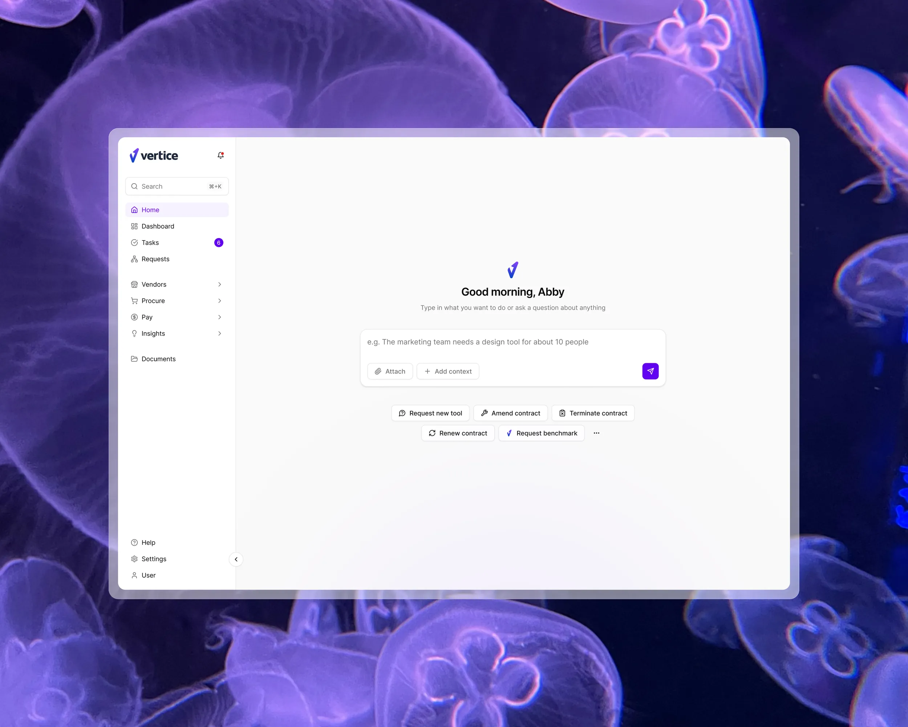
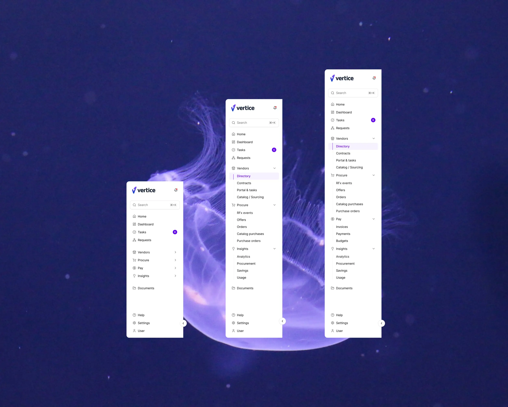
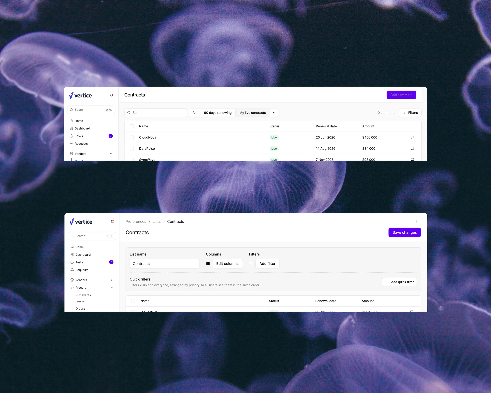
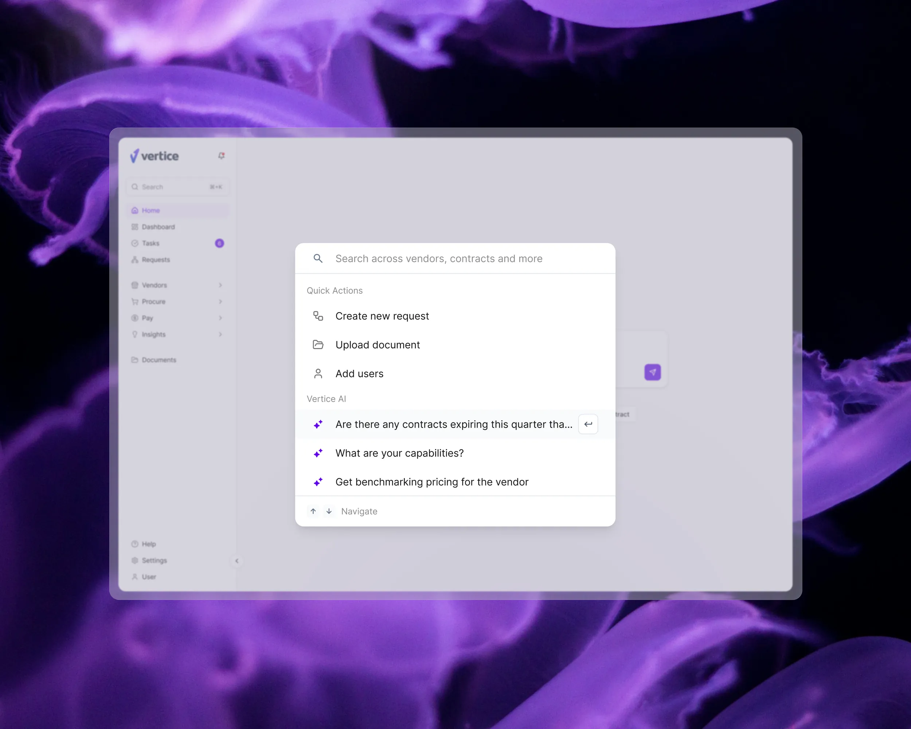
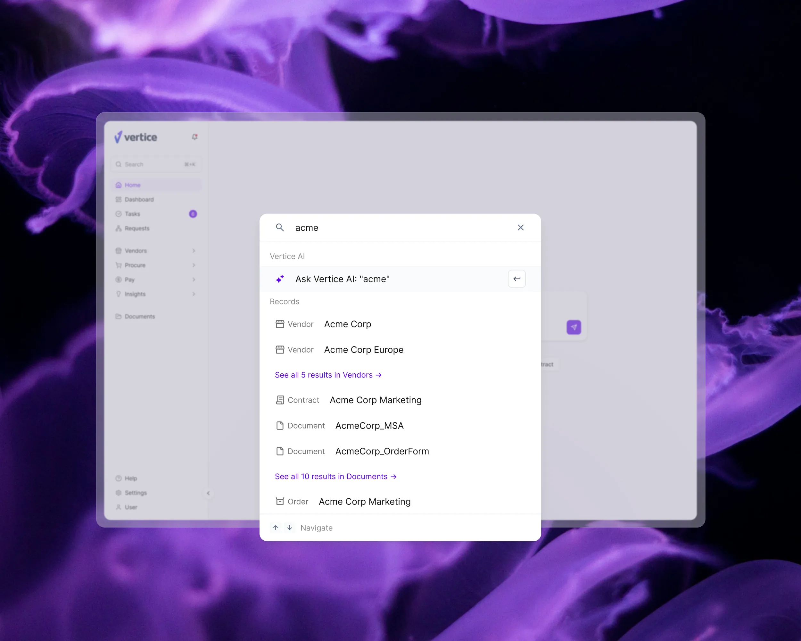
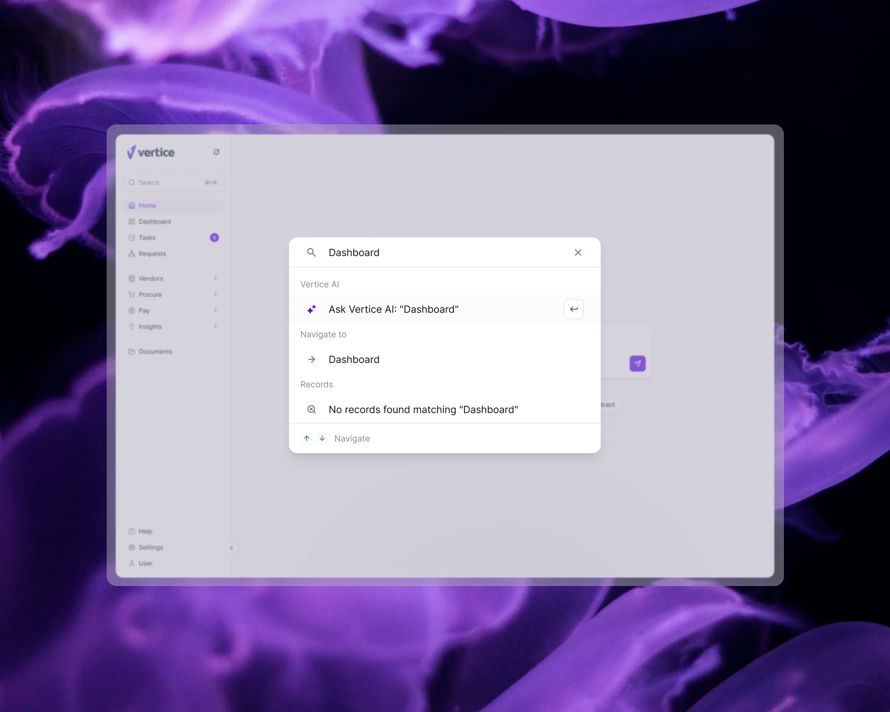

2025 – Now
Vertice
About
Vertice helps companies buy and renew their software without overpaying, and it saves them millions doing it. The platform is where teams track what they already own and ask for what they need next. It was built rigid, and built around its own data model rather than the people using it, so getting anything done meant thinking like the database. I came in to change that. I own the experience end to end, from someone’s first minutes in the product through to an approval that satisfies compliance.
Two groups meet in procurement and want opposite things from it. A procurement manager lives in the platform, running deals and renewals every day. Around them is everyone else, the engineer who needs a tool, the manager signing off the spend, who passes through once or twice a year and wants out fast. The product has to serve both without slowing either down.
Outcomes
The work runs across the platform, not in one corner of it.
I designed first time onboarding, and a global search that reaches vendors, contracts and pages from a single field, so people stop hunting through a menu for something they could simply ask for.



Then the request page. I pulled it apart and rebuilt it around what people are trying to achieve rather than the objects sitting behind it, and pointed it towards a flexible requisition model: you start from a business, category or employee need and take whichever route fits, instead of being marched down a single path. The negotiation flow brings AI into the work itself rather than bolting it on the side. And approvals now bend to the shape of the company running them, instead of putting every company through the same chain.
Problem
The platform described its own data model, not the way procurement actually works. Tracking anything was harder than it should have been. People could not get their job done without working around the product, and what they saw on screen never matched the process they were running in real life. Adoption struggled, which is the plainest signal a platform can give you that it was built from the inside out.
It was also a moving target. Engineering was rebuilding the system underneath at speed, and building it well, but design had to land inside their constraints as they set them. At its widest the work spanned 80 engineers, teams shipping faster than one designer could cover, so part of the job was catching AI generated screens that had gone in ahead of a design pass and pulling them back into line.
Research
Three sources, each answering something the others could not.
PostHog told me what people actually did, and that is where the case for expanding search came from: the fastest way to cut time to value was to stop making people navigate for things they could ask for directly.
Interviews with procurement managers, inside the company and outside it, told me why they behaved that way, and gave me the confidence to make quick calls and stand behind them.
AI prototyping closed the last gap, putting something working in front of people early on features like the negotiation agent, so we were reacting to how it felt to use rather than to how it read on a slide.



Learnings
Flexibility beats rigidity, and it is worth the extra work. A rigid flow is easy to specify, easy to build and easy to defend to compliance, but people do not move in straight lines and they need room to change their minds. The flexible version improved the experience tenfold and, against expectation, made the whole process easier to track rather than harder.
Designing with AI demands a sharper brief than designing without it. A prototype comes back in minutes, but only ever as good as the definition it was given, so the thinking has to happen first: what the user problem actually is, and which details genuinely matter.
In procurement, use cases and permissions are the work, not the edge cases. The data is sensitive enough that a wrong permission is not a rough edge to tidy up later, it is the whole problem.
And stay close to engineering. When there is more product being built than there is design to cover, the most useful thing a designer can do is give the people building it direction, rather than waiting to review what they ship.